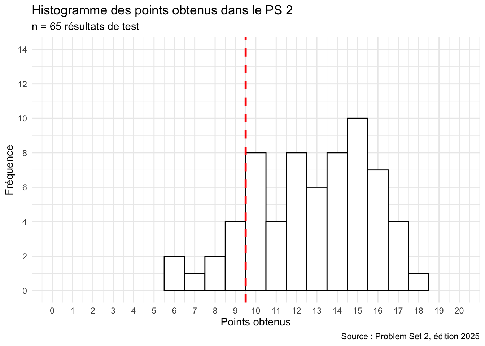
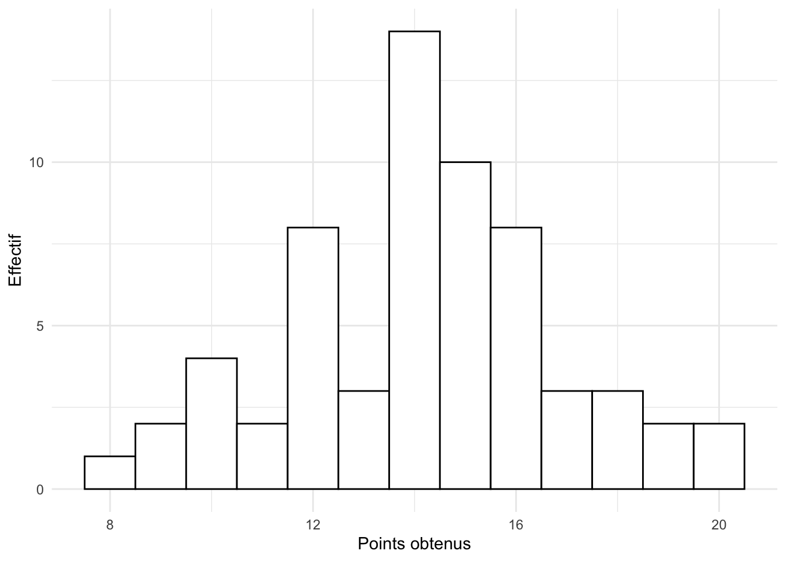
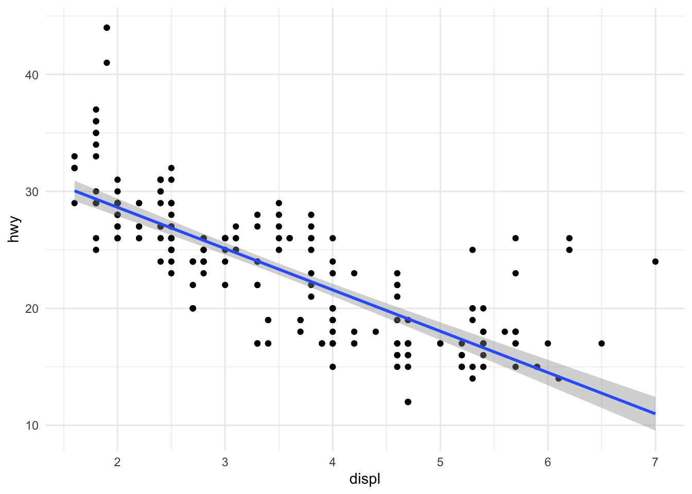
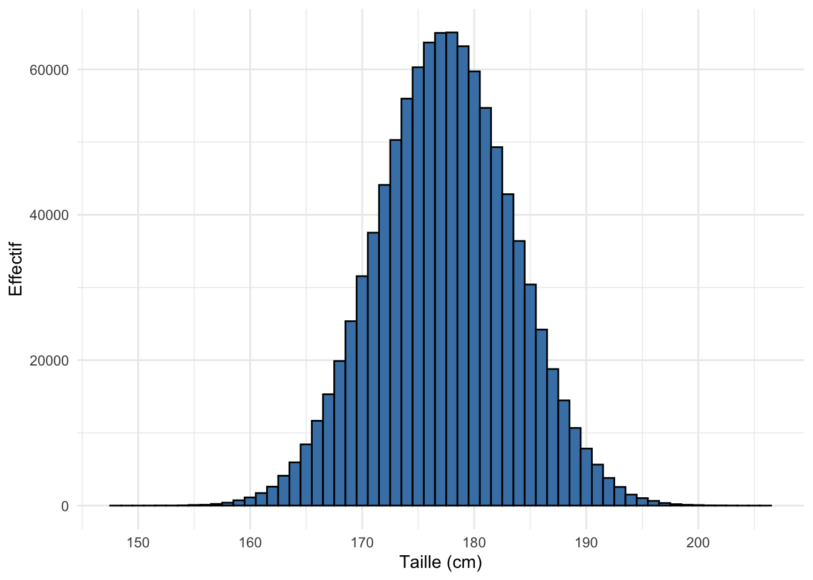

6 Révision 2 : visualisation
ImportantObjectifs d’apprentissage
- Vérifier que vous savez installer et charger un package et explorer un jeu de données d’exemple.
- Vérifier que vous savez construire et lire les quatre graphiques des chapitres 4 et 5.
- Repérer, grâce aux explications, les notions à revoir.
Ce chapitre reprend les chapitres 4 et 5 sous forme de questions. Beaucoup d’entre elles vous demandent de lire un graphique : décrivez d’abord ce que vous voyez, puis vérifiez avec le code.
Dans le cours, le Problem Set 2 était un test sur Moodle portant sur les chapitres 4 et 5. Les questions ci-dessous en reprennent le contenu, avec la correction et une explication pour chaque réponse.
Mise en gardeContexte : résultats de l’édition 2025 du cours
65 étudiant·es ont passé ce test (20 points au maximum, 10 pour réussir). La moyenne était de 12,8 points et 86 % des étudiant·es l’ont réussi.
ImportantEn bref
- Si vous hésitez entre
install.packages()etlibrary(), relisez « Les packages R » au chapitre 4. - Si vous confondez esthétiques, géométries et thèmes, relisez l’introduction à
ggplot2au chapitre 4. - Si la lecture d’un histogramme ou d’une boîte à moustaches vous pose problème, relisez les sections correspondantes du chapitre 5.
Au chapitre 7, vous importerez votre premier fichier de données et apprendrez à le transformer avec dplyr.
Exercices de révision
Ces questions reprennent le Problem Set 2.
Choisissez Vrai ou Faux, cochez une réponse ou tapez un nombre : la couleur indique tout de suite si votre réponse est correcte. Cliquez sur Explication pour voir la correction.
Question 6.1
Jugez chaque proposition :
Le package
ggplot2est inclus dans le tidyverse.Le package
ggplotest à utiliser pour faire des graphiques avec une variable, tandis que le packageggplot2est utile pour voir graphiquement la corrélation entre deux variables.Le responsable de
ggplot2(qui maintient le package) est Thomas Lin Pedersen.ggplot2est très utile pour modifier des données.ggplot2construit des graphiques de manière incrémentale, en travaillant avec des couches.
a) ggplot2 fait partie des packages chargés par library(tidyverse).
b) Il n’existe pas de package ggplot distinct : ggplot() est la fonction principale de ggplot2.
c) packageDescription("ggplot2")$Maintainer l’indique.
d) Pour modifier des données, on utilise dplyr ; ggplot2 sert à les visualiser.
e) On ajoute les couches les unes aux autres avec +.
Question 6.2
Jugez chaque proposition concernant le graphique suivant :

Le graphique montre différents niveaux de qualité de la couleur des diamants.
En moyenne, la relation entre le carat et le prix semble linéaire (le prix et le carat augmentent proportionnellement).
En moyenne, la relation entre le carat et le prix semble exponentielle (le prix augmente plus vite que le carat).
À carat égal, les diamants plus purs semblent plus chers dans ce graphique.
Le diamant le plus lourd est aussi le plus cher.
a) Les couleurs du graphique représentent la pureté (clarity), pas la couleur des diamants (color).
b) et c) Le nuage de points s’incurve vers le haut : le prix augmente plus vite que le carat.
d) Pour un même carat, les points des puretés élevées se situent plus haut. Parmi les diamants d’environ 1 carat, le prix médian passe de 2808 USD (I1) à 9764 USD (IF).
e) Le diamant le plus lourd (5,01 carats) coûte 18 018 USD, alors que le plus cher coûte 18 823 USD.
Question 6.3
Jugez chaque proposition concernant les composants d’un graphique ggplot2 (données, esthétiques, géométries, facettes, statistiques, coordonnées, thème) :
Pour créer un graphique
ggplot2, il faut toujours définir tous les composants, les uns après les autres.Les géométries définissent le type de graphique (p. ex. nuage de points, diagramme en barres, boîte à moustaches).
En général, on construit un graphique
ggplot2en commençant par les données.Les esthétiques définissent l’apparence générale du graphique (p. ex. le style du Wall Street Journal ou du magazine The Economist).
Les facettes, les statistiques, les coordonnées et le thème ne doivent pas obligatoirement être spécifiés dans le code, car R utilise pour eux des valeurs par défaut.
a) et e) Seuls les données, les esthétiques et au moins une géométrie sont nécessaires ; les autres composants ont des valeurs par défaut.
c) On commence par ggplot(data = ...), puis on ajoute les autres éléments avec +. Chaque géométrie ajoute une couche.
d) Les esthétiques (aes()) relient les variables aux axes, couleurs, tailles, etc. Le style « WSJ » ou « Economist » relève du thème (p. ex. theme_wsj() du package ggthemes).
Question 6.4
Quel est le prix en USD du diamant le moins cher du jeu de données diamonds ? (Donnez seulement la valeur numérique.)
Réponse :
min(diamonds$price)Question 6.5
Quelle est la longueur du pétale le plus court du jeu de données iris ? (Donnez seulement la valeur numérique.)
Réponse :
min(iris$Petal.Length)Question 6.6
Combien de chevaux-vapeur (gross horsepower, variable hp) a la Chrysler Imperial dans le jeu de données mtcars ?
Réponse :
Les noms des voitures sont les noms de lignes de mtcars :
mtcars["Chrysler Imperial", "hp"]Question 6.7
ggplot2 est un package R qui fait partie du tidyverse.
tidyverse::tidyverse_packages() liste les packages du tidyverse ; ggplot2 en fait partie.
Question 6.8
Jugez chaque proposition concernant l’histogramme suivant des points obtenus à un test du cours d’origine (fichier distribution_ps_1.csv) :

Les étudiant·es ont obtenu le plus fréquemment 13 points à ce test.
Le graphique montre qu’en médiane, 16 points ont été obtenus à ce test.
Le graphique montre qu’en moyenne, 16 points ont été obtenus à ce test.
L’histogramme montre que la distribution des points à ce test suit une loi normale centrée réduite.
a) La barre la plus haute est à 14 points (le mode).
b) et c) Un histogramme ne montre ni la médiane ni la moyenne exactes. Ici, la médiane vaut 14 et la moyenne 14,2.
d) Une loi normale centrée réduite a une moyenne de 0 et un écart-type de 1 : ce n’est pas le cas de points compris entre 8 et 20.
Question 6.9
Comment peut-on ajuster la largeur des intervalles dans un histogramme créé avec ggplot2 ?
En utilisant l’argument
bins.En ajustant l’argument
width.En modifiant l’argument
binwidth.En changeant l’argument
interval.
binwidth fixe directement la largeur de chaque barre ; bins fixe le nombre de barres, ce qui change aussi leur largeur. geom_histogram() n’a pas d’argument interval.
Question 6.10
Jugez chaque proposition concernant le graphique suivant, créé avec le jeu de données mpg (inclus dans le package ggplot2) :

La ligne de régression indique que la corrélation entre la taille du moteur et l’efficacité du carburant est négative.
Les données présentées proviennent du jeu de données
mtcars.Le jeu de données
mpgcontient des données relatives à l’économie de carburant de 1999 à 2008 pour 38 modèles de voitures populaires.L’axe des x de ce graphique indique les miles par gallon (
mpg).Le graphique montre que les moteurs de plus grande taille ont tendance à être associés à un plus grand nombre de miles par gallon.
a) et e) La droite descend : plus la cylindrée (displ) est grande, moins on parcourt de miles par gallon (hwy).
b) Les données viennent de mpg, pas de mtcars.
c) C’est la description de ?mpg.
d) L’axe des x montre la cylindrée (displ, en litres) ; les miles par gallon sont sur l’axe des y.
Question 6.11
Exécutez le code suivant, puis jugez chaque proposition :
library(ggplot2)
data(mtcars)
g <- ggplot(mtcars, aes(mpg, wt)) + geom_point()
print(g)gest un objet stocké dans le volet Environment de RStudio.Le graphique
gaffiche une relation entre le poids des voitures (wt) et leur efficacité énergétique (mpg, miles par gallon).Le code produit un histogramme.
Chaque point dans le graphique représente une voiture du jeu de données
mtcars.Le graphique indique que les deux variables affichées sont négativement corrélées.
a) L’affectation <- stocke le graphique dans l’objet g.
c) geom_point() produit un nuage de points, pas un histogramme.
d) Chaque ligne de mtcars (une voiture) donne un point.
e) Les voitures lourdes parcourent moins de miles par gallon : cor(mtcars$mpg, mtcars$wt) vaut −0,87.
Question 6.12
Exécutez le code suivant, puis jugez chaque proposition :
library(ggplot2)
data(mtcars)
# Transformations :
mtcars$cyl <- as.factor(mtcars$cyl)
mtcars$gear <- as.factor(mtcars$gear)
# Diagramme à barres :
ggplot(mtcars, aes(x = cyl, fill = gear)) +
geom_bar() +
labs(title = "Distribution of cylinders and gears in mtcars")Ce code produit un diagramme en barres représentant le nombre de voitures par nombre de cylindres.
La couleur des barres est déterminée par le nombre de vitesses (
gear).Les cylindres et les vitesses sont transformés en variables de type facteur.
Le graphique montre qu’il n’y a pas de voitures avec 8 cylindres et 4 vitesses dans
mtcars.Les voitures à 6 cylindres sont moins fréquentes que celles à 4 ou 8 cylindres.
a) geom_bar() compte les voitures par valeur de cyl.
b) fill = gear colore les barres selon le nombre de vitesses.
c) as.factor() transforme cyl et gear en facteurs.
d) La barre des 8 cylindres ne contient que des voitures à 3 et 5 vitesses.
e) Il y a 7 voitures à 6 cylindres, contre 11 à 4 cylindres et 14 à 8 cylindres.
Question 6.13
Exécutez le code suivant, puis jugez chaque proposition :
rnorm(1000)Ce code génère 1000 valeurs « aléatoires » qui se rapprochent d’une loi normale centrée réduite (angl. standard normal distribution).
Ce code génère un message d’erreur, car il y a des arguments manquants dans la fonction
rnorm().Ce code génère 1000 valeurs « aléatoires » qui se rapprochent d’une loi normale avec une moyenne = 1 et un écart-type = 0.
Ce code génère des valeurs numériques positives et négatives.
Toutes les lois normales ont le même écart-type.
Sans autres arguments, rnorm() utilise mean = 0 et sd = 1 : c’est la loi normale centrée réduite, qui produit des valeurs positives et négatives autour de 0.
e) L’écart-type est un paramètre de la loi : il varie d’une loi normale à l’autre.
Question 6.14
Une visualisation des données peut servir à l’analyse exploratoire des données.
Les graphiques sont un outil central de l’analyse exploratoire : ils révèlent la forme des distributions, les tendances et les valeurs aberrantes.
Question 6.15
Une boîte à moustaches peut être utilisée pour visualiser la distribution, la moyenne, les déciles et les valeurs extrêmes d’une variable.
Une boîte à moustaches montre la médiane et les quartiles (plus les moustaches et les valeurs extrêmes), pas la moyenne ni les déciles.
Question 6.16
Le code suivant crée un histogramme qui indique une loi normale :
library(ggplot2)
ggplot(data = diamonds, aes(x = price)) +
geom_histogram(binwidth = 600, fill = "steelblue", color = "black") +
labs(title = "Histogramme des prix dans le jeu de données diamonds",
subtitle = "n = 53 940 observations",
x = "Prix en USD", y = "Effectif") +
theme_minimal()La distribution des prix est fortement asymétrique à droite : beaucoup de diamants bon marché, peu de diamants très chers. La moyenne (3933 USD) dépasse d’ailleurs nettement la médiane (2401 USD).
Question 6.17
La couche geom_smooth(method = lm) peut être utilisée pour ajouter une ligne de régression à un nuage de points dans ggplot2.
geom_smooth(method = "lm") ajoute la droite de régression linéaire (et son intervalle de confiance) au nuage de points.
Question 6.18
Le graphique suivant montre une simulation d’un million de tailles aléatoires d’hommes en Suisse, réalisée avec la fonction rnorm(). Il illustre le fait que plus le nombre de simulations est élevé, plus une loi normale est approchée avec précision.

Avec un million de valeurs, l’histogramme prend presque parfaitement la forme en cloche de la loi normale. Avec seulement quelques dizaines de valeurs, il serait beaucoup plus irrégulier.
Question 6.19
La fonction as.factor() peut être utilisée pour transformer des vecteurs de type caractère ou numérique en facteurs.
as.factor() convertit un vecteur textuel ou numérique en facteur, p. ex. mtcars$cyl <- as.factor(mtcars$cyl).